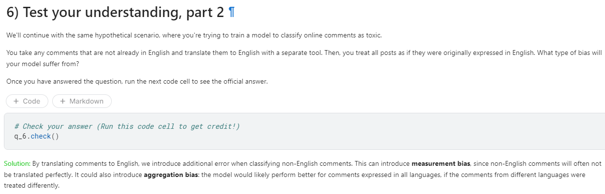
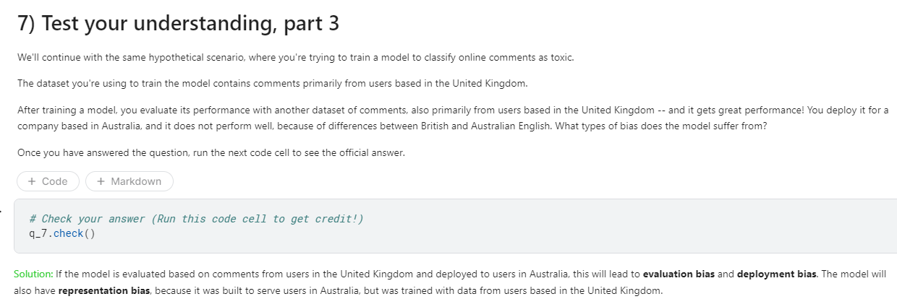
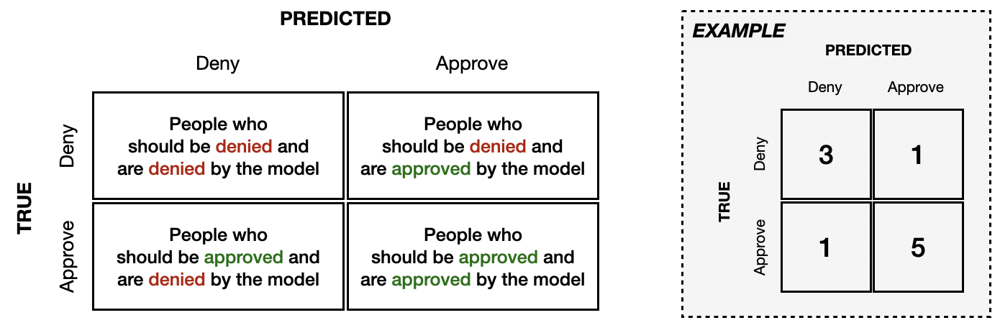
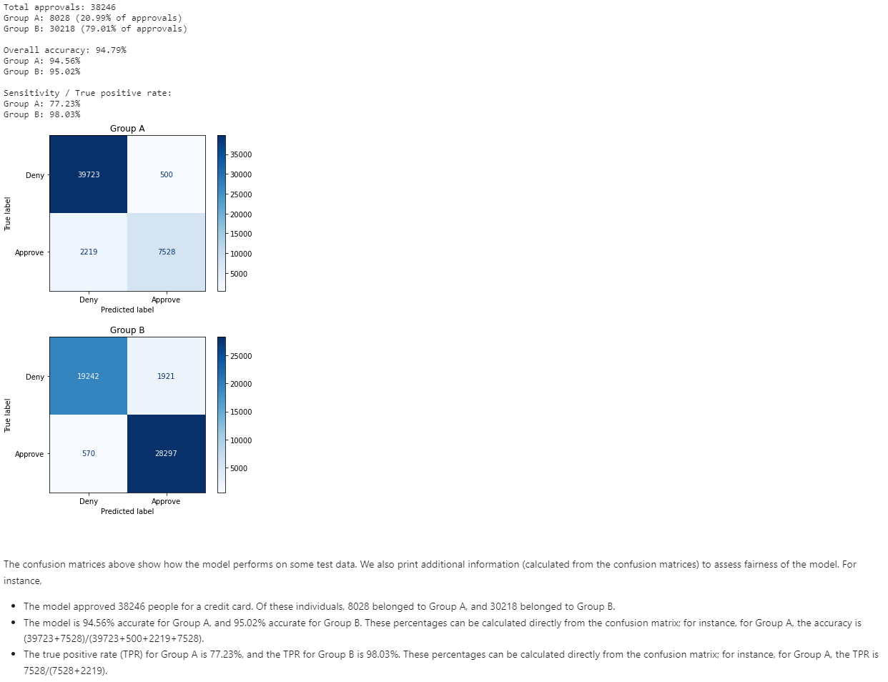
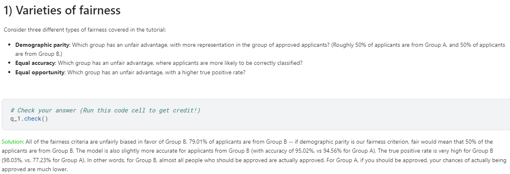
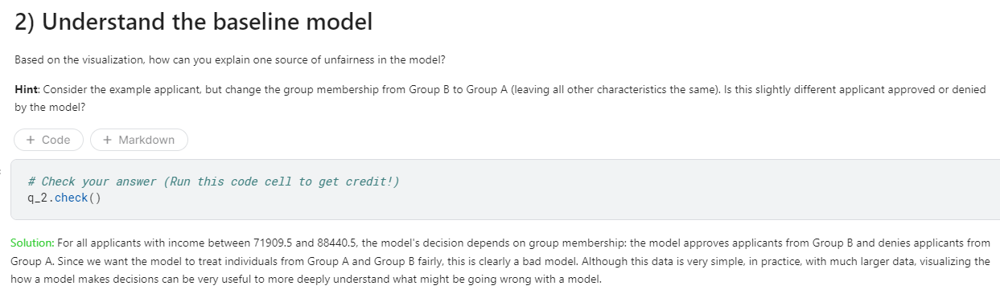

kaggle Intro to AI Ethics
These technologies have the potential to harm or help the people that they serve. By applying an ethical lens, we can work toward identifying the harms that these technologies can cause to people and we can design and build them to reduce these harms - or decide not to build them.
This course covers several topics:
- In the human-centered design lesson, you’ll learn how to design an AI system to ensure that it serves the needs of the people that it is intended for.
- In the bias lesson, you’ll determine how AI systems can learn to discriminate against certain groups.
- In the fairness lesson, you’ll learn to quantify the extent of the bias in AI systems.
- In the model cards lesson, you’ll learn how to use a popular framework for improving public accountability for AI models.
Human-Centered Design for AI
Before selecting data and training models, it is important to carefully consider the human needs an AI system should serve - and if it should be built at all.
Human-centered design (HCD) is an approach to designing systems that serve people’s needs.
6 steps
1. Understand people’s needs to define the problem.
Your entire team – including data scientists and engineers – should be involved in this step, so that every team member gains an understanding of the people they hope to serve. Your team should include and involve people with diverse perspectives and backgrounds, along race, gender, and other characteristics. Sharpen your problem definition and brainstorm creative and inclusive solutions together.
2. Ask if AI adds value to any potential solution.
- Would people generally agree that what you are trying to achieve is a good outcome?
- Would non-AI systems - such as rule-based solutions, which are easier to create, audit and maintain - be significantly less effective than an AI system?
- Is the task that you are using AI for one that people would find boring, repetitive or otherwise difficult to concentrate on?
- Have AI solutions proven to be better than other solutions for similar use cases in the past?
If you answered no to any of these questions, an AI solution may not be necessary or appropriate.
3. Consider the potential harms that the AI system could cause
Weigh the benefits of using AI against the potential harms, throughout the design pipeline: from collecting and labeling data, to training a model, to deploying the AI system. Consider the impact on users and on society. Your privacy team can help uncover hidden privacy issues and determine whether privacy-preserving techniques like differential privacy or federated learning may be appropriate. Take steps to reduce harms, including by embedding people - and therefore human judgment - more effectively in data selection, in model training and in the operation of the system. If you estimate that the harms are likely to outweigh the benefits, do not build the system.
example
An online education company wants to use an AI system to ‘read’ and automatically assign scores to student essays, while redirecting company staff to double-check random essays and to review essays that the AI system has trouble with. The system would enable the company to quickly get scores back to students. The company creates a harms review committee, which recommends that the system not be built. Some of the major harms flagged by the committee include: the potential for the AI system to pick up bias against certain patterns of language from training data and amplify it (harming people in the groups that use those patterns of language), to encourage students to ‘game’ the algorithm rather than improve their essays and to reduce the classroom role of education experts while increasing the role of technology experts.
4. Prototype, starting with non-AI solutions
Develop a non-AI prototype of your AI system quickly to see how people interact with it. This makes prototyping easier, faster and less expensive. It also gives you early information about what users expect from your system and how to make their interactions more rewarding and meaningful.
The people giving feedback should have diverse backgrounds – including along race, gender, expertise and other characteristics. They should also understand and consent to what they are helping with and how.
5. Provide ways for people to challenge the system
People who use your AI system once it is live should be able to challenge its recommendations or easily opt out of using it. Put systems and tools in place to accept, monitor and address challenges.
Talk to users and think from the perspective of a user: if you are curious or dissatisfied with the system’s recommendations, would you want to challenge it by:
- Requesting an explanation of how it arrived at its recommendation?
- Requesting a change in the information you input?
- Turning off certain features?
- Reaching out to the product team on social media?
- Taking some other action?
6. Build in safety measures
Safety measures protect users against harm. They seek to limit unintended behavior and accidents, by ensuring that a system reliably delivers high-quality outcomes. This can only be achieved through extensive and continuous evaluation and testing. Design processes around your AI system to continuously monitor performance, delivery of intended benefits, reduction of harms, fairness metrics and any changes in how people are actually using it.
Human oversight of your AI system is crucial:
- Create a human ‘red team’ to play the role of a person trying to manipulate your system into unintended behavior. Then, strengthen your system against any such manipulation.
- Determine how people in your organization can best monitor the system’s safety once it is live.
- Explore ways for your AI system to quickly alert a human when it is faced with a challenging case.
- Create ways for users and others to flag potential safety issues.
Identifying bias in AI
ML applications have discriminated against individuals on the basis of race, sex, religion, socioeconomic status, and other categories.
Bias is complex
Bias in data is complex. Flawed data can also result in representation bias (covered later in this tutorial), if a group is underrepresented in the training data. For instance, when training a facial detection system, if the training data contains mostly individuals with lighter skin tones, it will fail to perform well for users with darker skin tones. A third type of bias that can arise from the training data is called measurement bias, which you’ll learn about below.
bias can also result from the way in which the ML model is defined, from the way the model is compared to other models, and from the way that everyday users interpret the final results of the model. Harm can come from anywhere in the ML process.
6 types of bias
Historical bias
Historical bias occurs when the state of the world in which the data was generated is flawed.
Measurement bias
Measurement bias occurs when the accuracy of the data varies across groups. This can happen when working with proxy variables (variables that take the place of a variable that cannot be directly measured), if the quality of the proxy varies in different groups.
Aggregation bias
Aggregation bias occurs when groups are inappropriately combined, resulting in a model that does not perform well for any group or only performs well for the majority group. (This is often not an issue, but most commonly arises in medical applications.)
Evaluation bias
Evaluation bias occurs when evaluating a model, if the benchmark data (used to compare the model to other models that perform similar tasks) does not represent the population that the model will serve.
Deployment bias
Deployment bias occurs when the problem the model is intended to solve is different from the way it is actually used. If the end users don’t use the model in the way it is intended, there is no guarantee that the model will perform well.
Note that these are not mutually exclusive: that is, an ML application can easily suffer from more than one type of bias.



AI Fairness
Four fairness criteria
1. Demographic parity / statistical parity
Demographic parity says the model is fair if the composition of people who are selected by the model matches the group membership percentages of the applicants.
A nonprofit is organizing an international conference, and 20,000 people have signed up to attend. The organizers write a ML model to select 100 attendees who could potentially give interesting talks at the conference. Since 50% of the attendees will be women (10,000 out of 20,000), they design the model so that 50% of the selected speaker candidates are women.
2. Equal oppportunity
Equal opportunity fairness ensures that the proportion of people who should be selected by the model (“positives”) that are correctly selected by the model is the same for each group. We refer to this proportion as the true positive rate (TPR) or sensitivity of the model.
3. Equal accuracy
Alternatively, we could check that the model has equal accuracy for each group. That is, the percentage of correct classifications (people who should be denied and are denied, and people who should be approved who are approved) should be the same for each group.
4. Group unaware / “Fairness through unawareness”
Group unaware fairness removes all group membership information from the dataset. For instance, we can remove gender data to try to make the model fair to different gender groups. Similarly, we can remove information about race or age.
One difficulty of applying this approach in practice is that one has to be careful to identify and remove proxies for the group membership data. For instance, in cities that are racially segregated, zip code is a strong proxy for race. That is, when the race data is removed, the zip code data should also be removed, or else the ML application may still be able to infer an individual’s race from the data. Additionally, group unaware fairness is unlikely to be a good solution for historical bias.
Confusion matrix

Note that *group unaware* fairness cannot be detected from the confusion matrix, and is more concerned with removing group membership information from the dataset.
Also note that none of the examples satisfy more than one type of fairness. For instance, the demographic parity example does not satisfy equal accuracy or equal opportunity. Take the time to verify this now. In practice, it is not possible to optimize a model for more than one type of fairness: to read more about this, explore the Impossibility Theorem of Machine Fairness. So which fairness criterion should you select, if you can only satisfy one? As with most ethical questions, the correct answer is usually not straightforward, and picking a criterion should be a long conversation involving everyone on your team.
When working with a real project, the data will be much, much larger. In this case, confusion matrices are still a useful tool for analyzing model performance. One important thing to note, however, is that real-world models typically cannot be expected to satisfy any fairness definition perfectly.
Exercise



Model Cards
A model card is a short document that provides key information about a machine learning model. Model cards increase transparency by communicating information about trained models to broad audiences.
AI researchers are exploring many ways to communicate key information about models to inform people who use AI systems, people who are affected by AI systems and others.
Model cards - introduced in a 2019 paper - are one way for teams to communicate key information about their AI system to a broad audience. This information generally includes intended uses for the model, how the model works, and how the model performs in different situations.
Who is the audience of your model card?
A model card should strike a balance between being easy-to-understand and communicating important technical information. When writing a model card, you should consider your audience: the groups of people who are most likely to read your model card. These groups will vary according to the AI system’s purpose.
What sections should a model card contain?
1. Model Details
- Include background information, such as developer and model version.
2. Intended Use
- What use cases are in scope?
- Who are your intended users?
- What use cases are out of scope?
3. Factors
- What factors affect the impact of the model?
4. Metrics
- What metrics are you using to measure the performance of the model? Why did you pick those metrics?
- For classification systems – in which the output is a class label – potential error types include false positive rate, false negative rate, false discovery rate, and false omission rate. The relative importance of each of these depends on the use case.
- For score-based analyses – in which the output is a score or price – consider reporting model performance across groups.
5. Evaluation Data
- Which datasets did you use to evaluate model performance? Provide the datasets if you can.
- Why did you choose these datasets for evaluation?
- Are the datasets representative of typical use cases, anticipated test cases and/or challenging cases?
6. Training Data
- Which data was the model trained on?
7. quantitative Analyses
- How did the model perform on the metrics you chose? Break down performance by important factors and their intersections.
8. Ethical Considerations
- Describe ethical considerations related to the model, such as sensitive data used to train the model, whether the model has implications for human life, health, or safety, how risk was mitigated, and what harms may be present in model usage.
9. Caveats and Recommendations
- Add anything important that you have not covered elsewhere in the model card.
How can you use model cards in your organization?
The use of detailed model cards can often be challenging because an organization may not want to reveal its processes, proprietary data or trade secrets. In such cases, the developer team should think about how model cards can be useful and empowering, without including sensitive information.
Learn more
To dive deeper into the application of HCD to AI, check out these resources:
- Lex Fridman’s introductory lecture on Human-Centered Artificial Intelligence
- Google’s People + AI Research (PAIR) Guidebook
- Stanford Human-Centered Artificial Intelligence (HAI) research
To continue learning about bias, check out the Jigsaw Unintended Bias in Toxicity Classification competition that was introduced in this exercise.
- Kaggler Dieter has written a helpful two-part series that teaches you how to preprocess the data and train a neural network to make a competition submission. Get started here.
- Many Kagglers have written helpful notebooks that you can use to get started. Check them out on the competition page.
Another Kaggle competition that you can use to learn about bias is the Inclusive Images Challenge, which you can read more about in this blog post. The competition focuses on evaluation bias in computer vision.
- Explore different types of fairness with an interactive tool.
- You can read more about equal opportunity in this blog post.
- Analyze ML fairness with this walkthrough of the What-If Tool, created by the People and AI Research (PAIR) team at Google. This tool allows you to quickly amend an ML model, once you’ve picked the fairness criterion that is best for your use case.